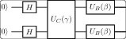

<!DOCTYPE html>
<html xmlns="http://www.w3.org/1999/xhtml">
<head>
  <meta charset="utf-8" />
  <meta name="generator" content="pandoc 3.10.2" />
  <meta name="viewport" content="width=device-width, initial-scale=1.0, user-scalable=yes" />
  <meta name="author" content="QuoNic" />
  <title>qaoa</title>
  <style>
    /* Default styles provided by pandoc.
    ** See https://pandoc.org/MANUAL.html#variables-for-html for config info.
    */
    html {
      color: #1a1a1a;
      background-color: #fdfdfd;
    }
    body {
      margin: 0 auto;
      max-width: 36em;
      padding-left: 50px;
      padding-right: 50px;
      padding-top: 50px;
      padding-bottom: 50px;
      hyphens: auto;
      overflow-wrap: break-word;
      text-rendering: optimizeLegibility;
      font-kerning: normal;
    }
    @media (max-width: 600px) {
      body {
        font-size: 0.9em;
        padding: 12px;
      }
      h1 {
        font-size: 1.8em;
      }
    }
    @media print {
      html {
        background-color: white;
      }
      body {
        background-color: transparent;
        color: black;
      }
      p, h2, h3 {
        orphans: 3;
        widows: 3;
      }
      h2, h3, h4 {
        page-break-after: avoid;
      }
    }
    p {
      margin: 1em 0;
    }
    a {
      color: #1a1a1a;
    }
    a:visited {
      color: #1a1a1a;
    }
    img {
      max-width: 100%;
    }
    svg {
      height: auto;
      max-width: 100%;
    }
    h1, h2, h3, h4, h5, h6 {
      margin-top: 1.4em;
    }
    h5, h6 {
      font-size: 1em;
      font-style: italic;
    }
    h6 {
      font-weight: normal;
    }
    ol, ul {
      padding-left: 1.7em;
      margin-top: 1em;
    }
    li > ol, li > ul {
      margin-top: 0;
    }
    blockquote {
      margin: 1em 0 1em 1.7em;
      padding-left: 1em;
      border-left: 2px solid #e6e6e6;
      color: #606060;
    }
    code {
      white-space: pre-wrap;
      font-family: Menlo, Monaco, Consolas, 'Lucida Console', monospace;
      font-size: 85%;
      margin: 0;
      hyphens: manual;
    }
    pre {
      margin: 1em 0;
      overflow: auto;
    }
    pre code {
      padding: 0;
      overflow: visible;
      overflow-wrap: normal;
    }
    .sourceCode {
     background-color: transparent;
     overflow: visible;
    }
    hr {
      border: none;
      border-top: 1px solid #1a1a1a;
      height: 1px;
      margin: 1em 0;
    }
    table {
      margin: 1em 0;
      border-collapse: collapse;
      width: 100%;
      overflow-x: auto;
      display: block;
      font-variant-numeric: lining-nums tabular-nums;
    }
    table caption {
      margin-bottom: 0.75em;
    }
    tbody {
      margin-top: 0.5em;
      border-top: 1px solid #1a1a1a;
      border-bottom: 1px solid #1a1a1a;
    }
    th {
      border-top: 1px solid #1a1a1a;
      padding: 0.25em 0.5em 0.25em 0.5em;
    }
    td {
      padding: 0.125em 0.5em 0.25em 0.5em;
    }
    header {
      margin-bottom: 4em;
      text-align: center;
    }
    #TOC li {
      list-style: none;
    }
    #TOC ul {
      padding-left: 1.3em;
    }
    #TOC > ul {
      padding-left: 0;
    }
    #TOC a:not(:hover) {
      text-decoration: none;
    }
    span.smallcaps{font-variant: small-caps;}
    div.columns{display: flex; gap: 1.5em;}
    div.column{flex: auto;}
    @media screen {
    div.columns{gap: min(4vw, 1.5em);}
    div.column{overflow-x: auto;}
    }
    div.hanging-indent{margin-left: 1.5em; text-indent: -1.5em;}
    /* The extra [class] is a hack that increases specificity enough to
       override a similar rule in reveal.js */
    ul.task-list[class]{list-style: none;}
    ul.task-list li input[type="checkbox"] {
      font-size: inherit;
      width: 0.8em;
      margin: 0 0.8em 0.2em -1.6em;
      vertical-align: middle;
    }
  </style>
  <script defer="" src="" type="text/javascript"></script>
</head>
<body>
<header id="title-block-header">
<h1 class="title">qaoa</h1>
<p class="author">QuoNic</p>
</header>
<div class="center">
<p><strong>Algorithms / 算法</strong> | 难度：高级 | 预计时间：20
分钟</p>
</div>
<h1 id="为什么需要">为什么需要？</h1>
<p>QAOA
是解决组合优化问题的量子算法，是近期量子设备上最有前景的应用之一。</p>
<h2 id="经典局限">经典局限</h2>
<p>̱</p>
<ul>
<li><p>NP-hard 问题（如 MaxCut）经典算法只能近似求解</p></li>
<li><p>经典近似算法有性能保证的上限</p></li>
<li><p>对于大规模问题，经典方法效率低</p></li>
</ul>
<h2 id="量子优势">量子优势</h2>
<p>̱</p>
<ul>
<li><p>QAOA 可以提供比经典近似算法更好的解</p></li>
<li><p>对噪声有鲁棒性，适合近期量子设备</p></li>
<li><p>理论上可以达到最优解</p></li>
</ul>
<h2 id="实际应用">实际应用</h2>
<p>̱</p>
<ul>
<li><p>MaxCut 问题</p></li>
<li><p>图着色问题</p></li>
<li><p>旅行商问题</p></li>
<li><p>供应链优化</p></li>
</ul>
<h1 id="快速上手">快速上手</h1>
<pre style="python"><code>from quonic.algorithms import qaoa

# Define MaxCut problem
graph = [(0,1), (1,2), (2,3), (3,0)]

# Run QAOA
result = qaoa(graph, p=2, optimizer=&quot;cobyla&quot;)
print(f&quot;MaxCut value: {result.maxcut_value}&quot;)
print(f&quot;Solution: {result.solution}&quot;)</code></pre>
<p><strong>预期输出</strong>：</p>
<pre><code>MaxCut value: 4
Solution: [1, 0, 1, 0]</code></pre>
<h1 id="原理详解">原理详解</h1>
<h2 id="电路图">电路图</h2>
<div class="center">
<p></p>
</div>
<h2 id="数学推导">数学推导</h2>
<p>QAOA 优化问题的目标函数： <span
class="math display">\[\begin{equation}
C(z) = \sum_{(i,j) \in E} w_{ij} (1 - z_i z_j)
\end{equation}\]</span></p>
<p>QAOA 电路： <span class="math display">\[\begin{equation}
|\gamma, \beta\rangle = \prod_{l=1}^{p} e^{-i\beta_l B} e^{-i\gamma_l C}
|+\rangle^{\otimes n}
\end{equation}\]</span></p>
<p>其中 <span class="math inline">\(B = \sum_i X_i\)</span>
是混合算子，<span class="math inline">\(C\)</span> 是问题算子。</p>
<h2 id="几何解释">几何解释</h2>
<p>QAOA 在参数空间中寻找最优的 <span class="math inline">\((\gamma,
\beta)\)</span>，使得测量结果的期望值最大化。</p>
<h1 id="代码详解">代码详解</h1>
<pre style="python"><code>from quonic.algorithms import qaoa

# qaoa(graph, p, optimizer)
# graph: list of edges (i, j)
# p: number of QAOA layers
# optimizer: classical optimizer
result = qaoa(graph, p=2, optimizer=&quot;cobyla&quot;)

# result.maxcut_value: optimal cut value
# result.solution: bit string solution
# result.params: optimized parameters
print(f&quot;MaxCut: {result.maxcut_value}&quot;)</code></pre>
<h1 id="进阶用法">进阶用法</h1>
<h2 id="场景-1不同层数">场景 1：不同层数</h2>
<pre style="python"><code># More layers for better approximation
result_p1 = qaoa(graph, p=1)
result_p2 = qaoa(graph, p=2)
result_p4 = qaoa(graph, p=4)</code></pre>
<h2 id="场景-2加权图">场景 2：加权图</h2>
<pre style="python"><code># Weighted graph
graph = [(0,1,2.0), (1,2,1.5), (2,3,3.0)]
result = qaoa(graph, p=2)</code></pre>
<h2 id="场景-3其他优化问题">场景 3：其他优化问题</h2>
<pre style="python"><code># Traveling salesman problem
from quonic.optimization import tsp
result = tsp(cities, optimizer=&quot;qaoa&quot;)</code></pre>
<h1 id="适用场景">适用场景</h1>
<h2 id="maxcut-问题">MaxCut 问题</h2>
<p>QAOA 最初就是为 MaxCut 问题设计的。</p>
<h2 id="组合优化">组合优化</h2>
<p>QAOA 可以用于各种组合优化问题。</p>
<h2 id="机器学习">机器学习</h2>
<p>QAOA 可以用于量子机器学习中的特征选择。</p>
<h1 id="常见问题">常见问题</h1>
<h2 id="qaoa-和-vqe-有什么区别">QAOA 和 VQE 有什么区别？</h2>
<p>QAOA 用于组合优化（离散变量），VQE 用于量子化学（连续变量）。</p>
<h2 id="qaoa-需要多少层">QAOA 需要多少层？</h2>
<p>层数 <span class="math inline">\(p\)</span>
越大，近似比越好。但更多的层意味着更多的参数需要优化。</p>
<h2 id="qaoa-能保证最优解吗">QAOA 能保证最优解吗？</h2>
<p>理论上，当 <span class="math inline">\(p \to \infty\)</span> 时，QAOA
可以达到最优解。但实际中 <span class="math inline">\(p\)</span>
有限，只能近似求解。</p>
<h1 id="学习路径">学习路径</h1>
<h2 id="前置知识">前置知识</h2>
<p>̱</p>
<ul>
<li><p>组合优化基础</p></li>
<li><p>量子电路</p></li>
<li><p>变分方法</p></li>
</ul>
<h2 id="继续学习">继续学习</h2>
<p>̱</p>
<ul>
<li><p>VQE（量子化学）</p></li>
<li><p>量子退火</p></li>
<li><p>量子机器学习</p></li>
</ul>
<h1 id="完整示例代码">完整示例代码</h1>
<h2 id="示例-1基本-qaoa">示例 1：基本 QAOA</h2>
<pre style="python"><code>from quonic.algorithms import qaoa

graph = [(0,1), (1,2), (2,3), (3,0)]
result = qaoa(graph, p=2, optimizer=&quot;cobyla&quot;)
print(f&quot;MaxCut: {result.maxcut_value}&quot;)</code></pre>
<h1 id="下载">下载</h1>
<p></p>
<ul>
<li><p>(https://github.com/ChrisLee0721/QuoNic/blob/main/examples/qaoa/qaoa.py)</p></li>
</ul>
</body>
</html>
